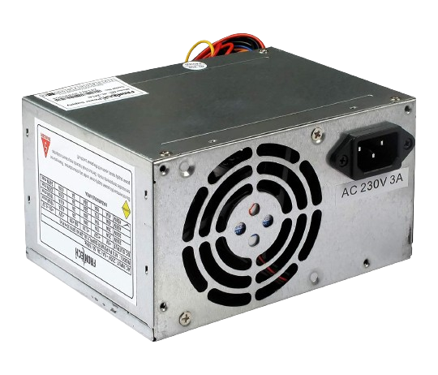

ABOUT SMPS
Switched Mode Power Supply (SMPS) efficiently converts electrical power by rapidly switching between on and off states. It regulates voltage, providing a stable output for electronic devices. SMPS is widely used in electronics for its compact size, energy efficiency, and ability to handle a range of input voltages. It's commonly found in computers, chargers, and electronic appliances.
